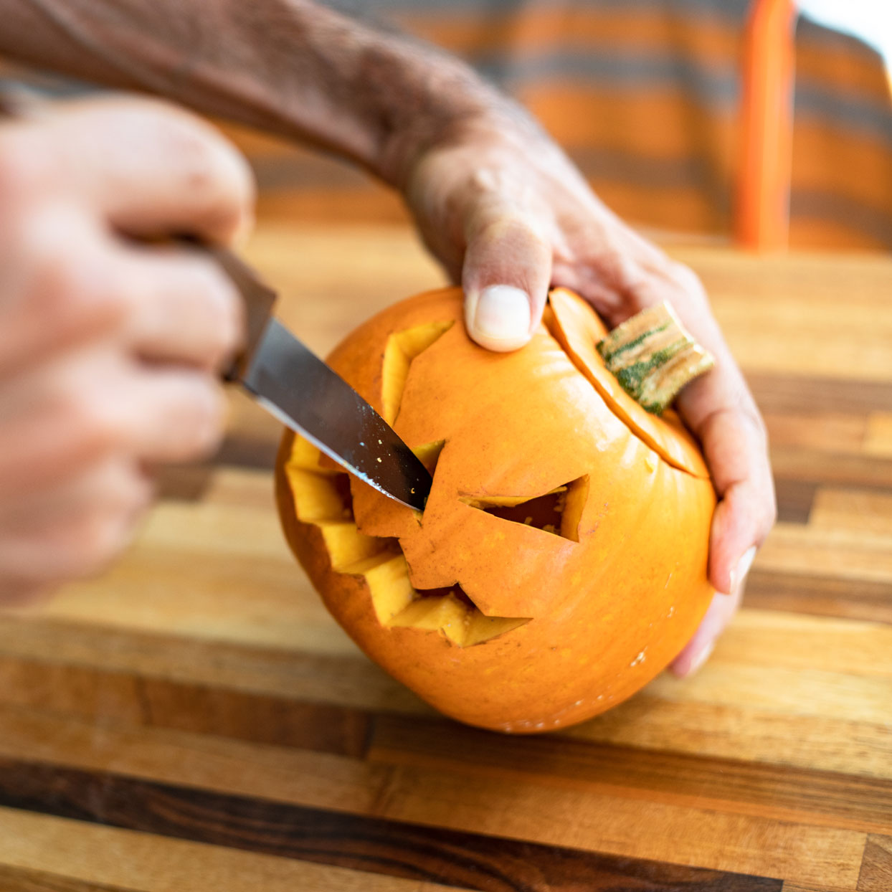

How to Carve a Pumpkin
This tutorial will teach you the basics of carving a pumpkin, a common halloween tradition that is a mainstay in Western culture. The style detailed here is a classic jack o’ lantern design, but you can use these techniques to carve your own designs. With enough skill and time, you can carve an intricately detailed jack o' lantern.
Part 1: Setup

Step 1: Tools & purchasing the pumpkin
Shortly before Halloween purchase a pumpkin of your desired size. Larger pumpkins require more work, but also less precision. You can also find a pumpkin carving kit, which comes with useful tools for the carving and detailing process. If you don’t buy a kit, you can just use a bread knife and a smaller sharp knife. You may also use a stencil for your desired design.
Step 2: Hollowing the pumpkin
Using a sharp knife, cut a circular hole in the top of the pumpkin around the stem. It is better to cut inwards on a slant, so the top of the hole fits without falling through. This will ensure the top can be reattached to the pumpkin and act as a lid. After removing the ‘lid’, remove the interior flesh of the pumpkin with a spoon or similar tool.
Step 3: Planning the design
Using a black marker, draw the desired design you will cut into your pumpkin. You can print and use stencils, of which there are many online. Planning the design will guide your cutting, and allow you to refine the design before cutting. Make sure you are happy with the design before proceeding.
Part 2: Carving the design & displaying
Step 1: Carve the features of your pumpkin
Using a serrated kitchen knife or a knife from your pumpkin carving kit, gently carve the key features of your design in a saw-like motion. After completing a section of the design, push out the piece of pumpkin and refine the shape by cutting off any pieces you missed the first time.
Step 2: Add a light to the pumpkin
With either a real candle or a fake LED candle, light it and place it inside of the pumpkin. Place the stem ‘lid’ from step 2 to close the top of the pumpkin. Your design should be pronounced by the light from the candle.
Step 3: Display the pumpkin
On Halloween, place the pumpkin at your doorstep. Keep it out of the way for trick or treaters so it doesn’t get damaged. Happy halloween!